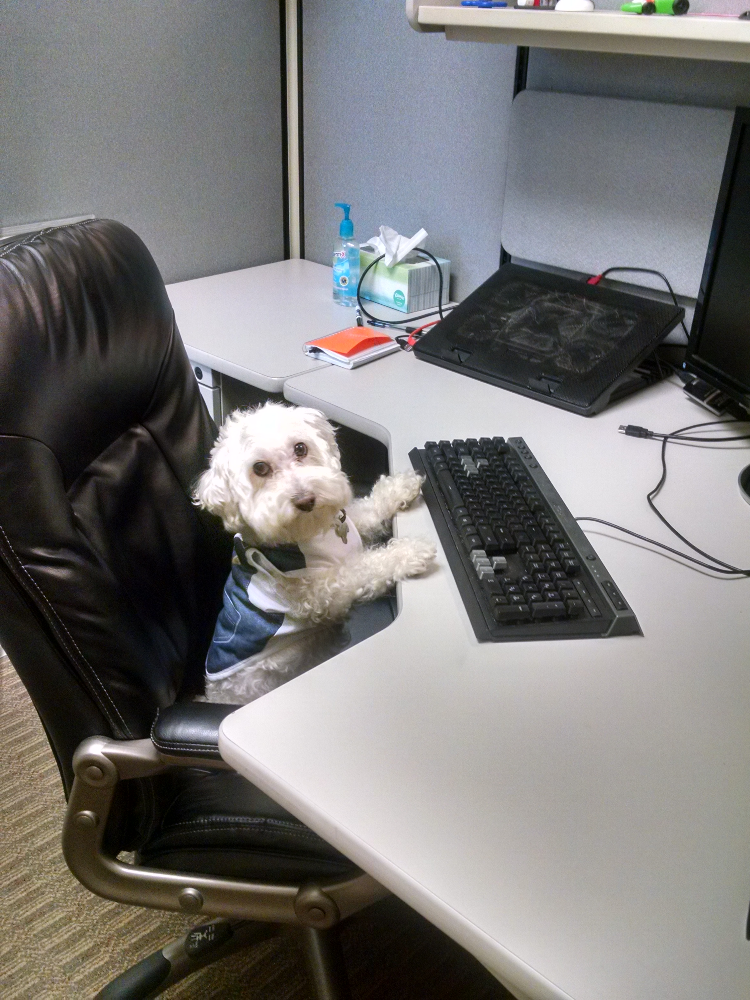

Daniel Toresson
Daniel är en man på 30 vintrar som studerar programmering på SUVNET i Borås.
- Han gillar musik med stråk och har ganska bra gehör.
- Han är även bra på att sprida positiv energi. Wooo!
- Daniel kallas ibland för Bosse.
Det var allt om Daniel för den här gången!
Om du vill se Daniels kodmeck och andra projekt på Github så kolla här!
Gå tillbaka till landningssidan den här vägen!
